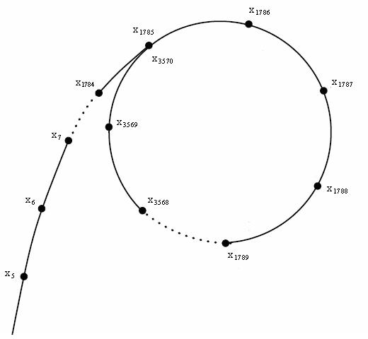

The problem of factoring integers into primes is central to computational number theory. It has been studied since at least the 3rd century BC, and many methods have been developed that are efficient for different inputs.
In this case study, we specifically consider the factorization of word-sized integers: those on the order of $10^9$ and $10^{18}$. Untypical for this book, in this one, you may actually learn an asymptotically better algorithm: we start with a few basic approaches and gradually build up to the $O(\sqrt[4]{n})$-time Pollard’s rho algorithm and optimize it to the point where it can factorize 60-bit semiprimes in 0.3-0.4ms and ~3 times faster than the previous state-of-the-art.
#Benchmark
For all methods, we will implement find_factor function that takes a positive integer $n$ and returns any of its non-trivial divisors (or 1 if the number is prime):
// I don't feel like typing "unsigned long long" each time
typedef __uint16_t u16;
typedef __uint32_t u32;
typedef __uint64_t u64;
typedef __uint128_t u128;
u64 find_factor(u64 n);
To find the full factorization, you can apply it to $n$, reduce it, and continue until a new factor can no longer be found:
vector<u64> factorize(u64 n) {
vector<u64> factorization;
do {
u64 d = find_factor(n);
factorization.push_back(d);
n /= d;
} while (d != 1);
return factorization;
}
After each removed factor, the problem becomes considerably smaller, so the worst-case running time of full factorization is equal to the worst-case running time of a find_factor call.
For many factorization algorithms, including those presented in this section, the running time scales with the smaller prime factor. Therefore, to provide worst-case input, we use semiprimes: products of two prime numbers $p \le q$ that are on the same order of magnitude. We generate a $k$-bit semiprime as the product of two random $\lfloor k / 2 \rfloor$-bit primes.
Since some of the algorithms are inherently randomized, we also tolerate a small (<1%) percentage of false-negative errors (when find_factor returns 1 despite number $n$ being composite), although this rate can be reduced to almost zero without significant performance penalties.
#Trial division
The most basic approach is to try every integer smaller than $n$ as a divisor:
u64 find_factor(u64 n) {
for (u64 d = 2; d < n; d++)
if (n % d == 0)
return d;
return 1;
}
We can notice that if $n$ is divided by $d < \sqrt n$, then it is also divided by $\frac{n}{d} > \sqrt n$, and there is no need to check for it separately. This lets us stop trial division early and only check for potential divisors that do not exceed $\sqrt n$:
u64 find_factor(u64 n) {
for (u64 d = 2; d * d <= n; d++)
if (n % d == 0)
return d;
return 1;
}
In our benchmark, $n$ is a semiprime, and we always find the lesser divisor, so both $O(n)$ and $O(\sqrt n)$ implementations perform the same and are able to factorize ~2k 30-bit numbers per second — while taking whole 20 seconds to factorize a single 60-bit number.
#Lookup Table
Nowadays, you can type factor 57 in your Linux terminal or Google search bar to get the factorization of any number. But before computers were invented, it was more practical to use factorization tables: special books containing factorizations of the first $N$ numbers.
We can also use this approach to compute these lookup tables during compile time. To save space, we can store only the smallest divisor of a number. Since the smallest divisor does not exceed the $\sqrt n$, we need just one byte per a 16-bit integer:
template <int N = (1<<16)>
struct Precalc {
unsigned char divisor[N];
constexpr Precalc() : divisor{} {
for (int i = 0; i < N; i++)
divisor[i] = 1;
for (int i = 2; i * i < N; i++)
if (divisor[i] == 1)
for (int k = i * i; k < N; k += i)
divisor[k] = i;
}
};
constexpr Precalc P{};
u64 find_factor(u64 n) {
return P.divisor[n];
}
With this approach, we can process 3M 16-bit integers per second, although it would probably get slower for larger numbers. While it requires just a few milliseconds and 64KB of memory to calculate and store the divisors of the first $2^{16}$ numbers, it does not scale well for larger inputs.
#Wheel factorization
To save paper space, pre-computer era factorization tables typically excluded numbers divisible by $2$ and $5$, making the factorization table ½ × ⅘ = 0.4 of its original size. In the decimal numeral system, you can quickly determine whether a number is divisible by $2$ or $5$ (by looking at its last digit) and keep dividing the number $n$ by $2$ or $5$ while it is possible, eventually arriving at some entry in the factorization table.
We can apply a similar trick to trial division by first checking if the number is divisible by $2$ and then only considering odd divisors:
u64 find_factor(u64 n) {
if (n % 2 == 0)
return 2;
for (u64 d = 3; d * d <= n; d += 2)
if (n % d == 0)
return d;
return 1;
}
With 50% fewer divisions to perform, this algorithm works twice as fast.
This method can be extended: if the number is not divisible by $3$, we can also ignore all multiples of $3$, and the same goes for all other divisors. The problem is, as we increase the number of primes to exclude, it becomes less straightforward to iterate only over the numbers not divisible by them as they follow an irregular pattern — unless the number of primes is small.
For example, if we consider $2$, $3$, and $5$, then, among the first $90$ numbers, we only need to check:
(1,) 7, 11, 13, 17, 19, 23, 29, 31, 37, 41, 43, 47, 49, 53, 59, 61, 67, 71, 73, 77, 79, 83, 89…
You can notice a pattern: the sequence repeats itself every $30$ numbers. This is not surprising since the remainder modulo $2 \times 3 \times 5 = 30$ is all we need to determine whether a number is divisible by $2$, $3$, or $5$. This means that we only need to check $8$ numbers with specific remainders out of every $30$, proportionally improving the performance:
u64 find_factor(u64 n) {
for (u64 d : {2, 3, 5})
if (n % d == 0)
return d;
u64 offsets[] = {0, 4, 6, 10, 12, 16, 22, 24};
for (u64 d = 7; d * d <= n; d += 30) {
for (u64 offset : offsets) {
u64 x = d + offset;
if (n % x == 0)
return x;
}
}
return 1;
}
As expected, it works $\frac{30}{8} = 3.75$ times faster than the naive trial division, processing about 7.6k 30-bit numbers per second. The performance can be improved further by considering more primes, but the returns are diminishing: adding a new prime $p$ reduces the number of iterations by $\frac{1}{p}$ but increases the size of the skip-list by a factor of $p$, requiring proportionally more memory.
#Precomputed Primes
If we keep increasing the number of primes in wheel factorization, we eventually exclude all composite numbers and only check for prime factors. In this case, we don’t need this array of offsets but just the array of primes:
const int N = (1 << 16);
struct Precalc {
u16 primes[6542]; // # of primes under N=2^16
constexpr Precalc() : primes{} {
bool marked[N] = {};
int n_primes = 0;
for (int i = 2; i < N; i++) {
if (!marked[i]) {
primes[n_primes++] = i;
for (int j = 2 * i; j < N; j += i)
marked[j] = true;
}
}
}
};
constexpr Precalc P{};
u64 find_factor(u64 n) {
for (u16 p : P.primes)
if (n % p == 0)
return p;
return 1;
}
This approach lets us process almost 20k 30-bit integers per second, but it does not work for larger (64-bit) numbers unless they have small ($< 2^{16}$) factors.
Note that this is actually an asymptotic optimization: there are $O(\frac{n}{\ln n})$ primes among the first $n$ numbers, so this algorithm performs $O(\frac{\sqrt n}{\ln \sqrt n})$ operations, while wheel factorization only eliminates a large but constant fraction of divisors. If we extend it to 64-bit numbers and precompute every prime under $2^{32}$ (storing which would require several hundred megabytes of memory), the relative speedup would grow by a factor of $\frac{\ln \sqrt{n^2}}{\ln \sqrt n} = 2 \cdot \frac{1/2}{1/2} \cdot \frac{\ln n}{\ln n} = 2$.
All variants of trial division, including this one, are bottlenecked by the speed of integer division, which can be optimized if we know the divisors in advance and allow for some additional precomputation. In our case, it is suitable to use the Lemire division check:
// ...precomputation is the same as before,
// but we store the reciprocal instead of the prime number itself
u64 magic[6542];
// for each prime i:
magic[n_primes++] = u64(-1) / i + 1;
u64 find_factor(u64 n) {
for (u64 m : P.magic)
if (m * n < m)
return u64(-1) / m + 1;
return 1;
}
This makes the algorithm ~18x faster: we can now factorize ~350k 30-bit numbers per second, which is actually the most efficient algorithm we have for this number range. While it can probably be optimized even further by performing these checks in parallel with SIMD, we will stop there and try a different, asymptotically better approach.
#Pollard’s Rho Algorithm
Pollard’s rho is a randomized $O(\sqrt[4]{n})$ integer factorization algorithm that makes use of the birthday paradox:
One only needs to draw $d = \Theta(\sqrt{n})$ random numbers between $1$ and $n$ to get a collision with high probability.
The reasoning behind it is that each of the $d$ added element has a $\frac{d}{n}$ chance of colliding with some other element, implying that the expected number of collisions is $\frac{d^2}{n}$. If $d$ is asymptotically smaller than $\sqrt n$, then this ratio grows to zero as $n \to \infty$, and to infinity otherwise.
Consider some function $f(x)$ that takes a remainder $x \in [0, n)$ and maps it to some other remainder of $n$ in a way that seems random from the number theory point of view. Specifically, we will use $f(x) = x^2 + 1 \bmod n$, which is random enough for our purposes.
Now, consider a graph where each number-vertex $x$ has an edge pointing to $f(x)$. Such graphs are called functional. In functional graphs, the “trajectory” of any element — the path we walk if we start from that element and keep following the edges — is a path that eventually loops around (because the set of vertices is limited, and at some point, we have to go to a vertex we have already visited).

Consider a trajectory of some particular element $x_0$:
$$ x_0, \; f(x_0), \; f(f(x_0)), \; \ldots $$Let’s make another sequence out of this one by reducing each element modulo $p$, the smallest prime divisor of $n$.
Lemma. The expected length of the reduced sequence before it turns into a cycle is $O(\sqrt[4]{n})$.
Proof: Since $p$ is the smallest divisor, $p \leq \sqrt n$. Each time we follow a new edge, we essentially generate a random number between $0$ and $p$ (we treat $f$ as a “deterministically-random” function). The birthday paradox states that we only need to generate $O(\sqrt p) = O(\sqrt[4]{n})$ numbers until we get a collision and thus enter a loop.
Since we don’t know $p$, this mod-$p$ sequence is only imaginary, but if find a cycle in it — that is, $i$ and $j$ such that
$$ f^i(x_0) \equiv f^j(x_0) \pmod p $$ then we can also find $p$ itself as $$ p = \gcd(|f^i(x_0) - f^j(x_0)|, n) $$ The algorithm itself just finds this cycle and $p$ using this GCD trick and Floyd’s “tortoise and hare” algorithm: we maintain two pointers $i$ and $j = 2i$ and check that $$ \gcd(|f^i(x_0) - f^j(x_0)|, n) \neq 1 $$which is equivalent to comparing $f^i(x_0)$ and $f^j(x_0)$ modulo $p$. Since $j$ (hare) is increasing at twice the rate of $i$ (tortoise), their difference is increasing by $1$ each iteration and eventually will become equal to (or a multiple of) the cycle length, with $i$ and $j$ pointing to the same elements. And as we proved half a page ago, reaching a cycle would only require $O(\sqrt[4]{n})$ iterations:
u64 f(u64 x, u64 mod) {
return ((u128) x * x + 1) % mod;
}
u64 diff(u64 a, u64 b) {
// a and b are unsigned and so is their difference, so we can't just call abs(a - b)
return a > b ? a - b : b - a;
}
const u64 SEED = 42;
u64 find_factor(u64 n) {
u64 x = SEED, y = SEED, g = 1;
while (g == 1) {
x = f(f(x, n), n); // advance x twice
y = f(y, n); // advance y once
g = gcd(diff(x, y));
}
return g;
}
While it processes only ~25k 30-bit integers — which is almost 15 times slower than by checking each prime using a fast division trick — it dramatically outperforms every $\tilde{O}(\sqrt n)$ algorithm for 60-bit numbers, factorizing around 90 of them per second.
#Pollard-Brent Algorithm
Floyd’s cycle-finding algorithm has a problem in that it moves iterators more than necessary: at least half of the vertices are visited one additional time by the slower iterator.
One way to solve it is to memorize the values $x_i$ that the faster iterator visits and, every two iterations, compute the GCD using the difference of $x_i$ and $x_{\lfloor i / 2 \rfloor}$. But it can also be done without extra memory using a different principle: the tortoise doesn’t move on every iteration, but it gets reset to the value of the faster iterator when the iteration number becomes a power of two. This lets us save additional iterations while still using the same GCD trick to compare $x_i$ and $x_{2^{\lfloor \log_2 i \rfloor}}$ on each iteration:
u64 find_factor(u64 n) {
u64 x = SEED;
for (int l = 256; l < (1 << 20); l *= 2) {
u64 y = x;
for (int i = 0; i < l; i++) {
x = f(x, n);
if (u64 g = gcd(diff(x, y), n); g != 1)
return g;
}
}
return 1;
}
Note that we also set an upper limit on the number of iterations so that the algorithm finishes in a reasonable amount of time and returns 1 if $n$ turns out to be a prime.
It actually does not improve performance and even makes the algorithm ~1.5x slower, which probably has something to do with the fact that $x$ is stale. It spends most of the time computing the GCD and not advancing the iterator — in fact, the time requirement of this algorithm is currently $O(\sqrt[4]{n} \log n)$ because of it.
Instead of optimizing the GCD itself, we will optimize the number of its invocations. We can use the fact that if one of $a$ and $b$ contains factor $p$, then $a \cdot b \bmod n$ will also contain it, so instead of computing $\gcd(a, n)$ and $\gcd(b, n)$, we can compute $\gcd(a \cdot b \bmod n, n)$. This way, we can group the calculations of GCP in groups of $M = O(\log n)$ we remove $\log n$ out of the asymptotic:
const int M = 1024;
u64 find_factor(u64 n) {
u64 x = SEED;
for (int l = M; l < (1 << 20); l *= 2) {
u64 y = x, p = 1;
for (int i = 0; i < l; i += M) {
for (int j = 0; j < M; j++) {
y = f(y, n);
p = (u128) p * diff(x, y) % n;
}
if (u64 g = gcd(p, n); g != 1)
return g;
}
}
return 1;
}
Now it performs 425 factorizations per second, bottlenecked by the speed of modulo.
#Optimizing the Modulo
The final step is to apply Montgomery multiplication. Since the modulo is constant, we can perform all computations — advancing the iterator, multiplication, and even computing the GCD — in the Montgomery space where reduction is cheap:
struct Montgomery {
u64 n, nr;
Montgomery(u64 n) : n(n) {
nr = 1;
for (int i = 0; i < 6; i++)
nr *= 2 - n * nr;
}
u64 reduce(u128 x) const {
u64 q = u64(x) * nr;
u64 m = ((u128) q * n) >> 64;
return (x >> 64) + n - m;
}
u64 multiply(u64 x, u64 y) {
return reduce((u128) x * y);
}
};
u64 f(u64 x, u64 a, Montgomery m) {
return m.multiply(x, x) + a;
}
const int M = 1024;
u64 find_factor(u64 n, u64 x0 = 2, u64 a = 1) {
Montgomery m(n);
u64 x = SEED;
for (int l = M; l < (1 << 20); l *= 2) {
u64 y = x, p = 1;
for (int i = 0; i < l; i += M) {
for (int j = 0; j < M; j++) {
x = f(x, m);
p = m.multiply(p, diff(x, y));
}
if (u64 g = gcd(p, n); g != 1)
return g;
}
}
return 1;
}
This implementation can processes around 3k 60-bit integers per second, which is ~3x faster than what PARI / SageMath’s factor / cat semiprimes.txt | time factor measures.
#Further Improvements
Optimizations. There is still a lot of potential for optimization in our implementation of the Pollard’s algorithm:
- We could probably use a better cycle-finding algorithm, exploiting the fact that the graph is random. For example, there is little chance that we enter the loop in within the first few iterations (the length of the cycle and the path we walk before entering it should be equal in expectation since before we loop around, we choose the vertex of the path we’ve walked independently), so we may just advance the iterator for some time before starting the trials with the GCD trick.
- Our current approach is bottlenecked by advancing the iterator (the latency of Montgomery multiplication is much higher than its reciprocal throughput), and while we are waiting for it to complete, we could perform more than just one trial using the previous values.
- If we run $p$ independent instances of the algorithm with different seeds in parallel and stop when one of them finds the answer, it would finish $\sqrt p$ times faster (the reasoning is similar to the Birthday paradox; try to prove it yourself). We don’t have to use multiple cores for that: there is a lot of untapped instruction-level parallelism, so we could concurrently run two or three of the same operations on the same thread, or use SIMD instructions to perform 4 or 8 multiplications in parallel.
I would not be surprised to see another 3x improvement and throughput of ~10k/sec. If you implement some of these ideas, please let me know.
Errors. Another aspect that we need to handle in a practical implementation is possible errors. Our current implementation has a 0.7% error rate for 60-bit integers, and it grows higher if the numbers are lower. These errors come from three main sources:
- A cycle simply not being found (the algorithm is inherently random, and there is no guarantee that it will be found). In this case, we need to perform a primality test and optionally start again.
- The
pvariable becoming zero (because both $p$ and $q$ can get into the product). It becomes increasingly more likely as we decrease size of the inputs or increase the constantM. In this case, we need to either restart the process or (better) roll back the last $M$ iterations and perform the trials one by one. - Overflows in the Montgomery multiplication. Our current implementation is pretty loose with them, and if $n$ is large, we need to add more
x > mod ? x - mod : xkind of statements to deal with overflows.
Larger numbers. These issues become less important if we exclude small numbers and numbers with small prime factors using the algorithms we’ve implemented before. In general, the optimal approach should depend on the size of the numbers:
- Smaller than $2^{16}$: use a lookup table;
- Smaller than $2^{32}$: use a list of precomputed primes with a fast divisibility check;
- Smaller than $2^{64}$ or so: use Pollard’s rho algorithm with Montgomery multiplication;
- Smaller than $10^{50}$: switch to Lenstra elliptic curve factorization;
- Smaller than $10^{100}$: switch to Quadratic Sieve;
- Larger than $10^{100}$: switch to General Number Field Sieve.
The last three approaches are very different from what we’ve been doing and require much more advanced number theory, and they deserve an article (or a full-length university course) of their own.